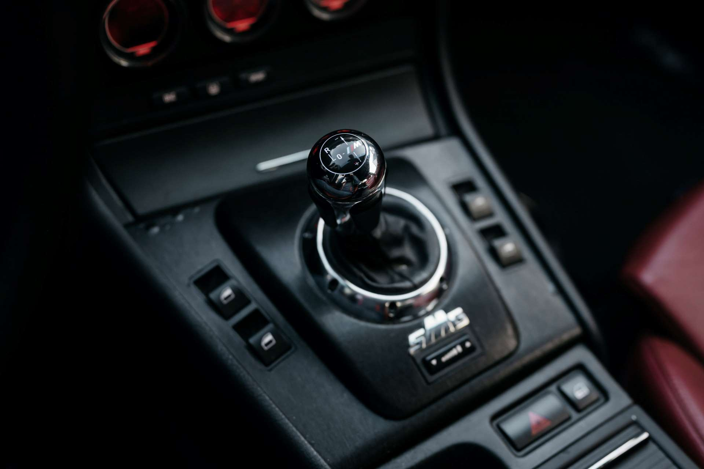

AMG's SpeedShift MCT
Ever since my professor told me that AMG simply replaced a torque-converter with a wet-clutch and kept the rest of the hardware same, I was intrigued by it. Especially because it was used in one of my all time favourites - W204 C63 AMG.
THIS IS WHAT THE 6.2 liter amg v8 Was COUPLED WITH →
SMG, From BMW,
with love
One of the most divisive transmissions in the rich BMW history. How SMG got its reputation, and does it deserve it?
What on earth is SMG ?? →
ITALIAN TWIST TO AN AUTOMATIC TRANSMISSION
Formula 1 inspired robotized manual transmissions used in the poster cars of the 2000s. The origin of the brutal gearshifts that the Aventador is famous for.
HOW ITALIANS LIKE TO DO IT →
WHAT's in a name?
TipTronic was Porsche's trademark for an ordinary torque-converter automatic with a manual override gate, but so was it for almost any other manufacturer. TipTronic was never its own transmission, it was a concept that was used by many, under their own respective names.
Yes, tiptronics ended up being hated as well →
best of german tech?
The dual-clutch gearboxes are now considered state-of-the art. But that idea sat shelved for two decades before it ever reached a customer, then proved itself at Monza before Porsche ever put it in a road car.
READ THE FULL FORM OF PDK (iTS IN GERMAN) →
A manual with no clutch pedal
Clutchless manuals keep the H-pattern lever and automate only the clutch. The idea has been tried and dropped for seventy years, and Hyundai and Kia have now revived it as the iMT.
WHY DID FAIL SO MANY TIMES? →